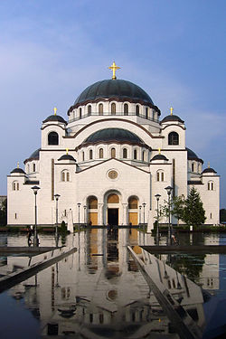
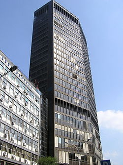

Znamenitosti
Vinča

Nalazi se na 14 kilometara od Beograda, pored puta Beograd-Smederevo i nadaleko je poznata po nalazima izuzetne arheološke vrednosti. Praistorijski lokalitet Belo brdo je na samoj obali Dunava i predstavlja svetski poznato arheološko nalazište sa ostacima, velikog neolitskog naselja, u kulturnom sloju debljine 10,5 m i zahvata površinu od 10 hektara. U toku iskopavanja, koje je započeo 1908. profesor Beogradskog univerziteta dr Miloje Vasić, otkrivene su brojne kuće, zemunice sa ostacima materijalne kulture praistorijskog čoveka.Svaki od nataloženih praslojeva, koji obeležava pojedine faze života u Vinči (u razdoblju od oko 4500. do 3200. pre naše ere), sadrži prave riznice najraznovrsnijih predmeta: oruđe i oružje od kamena i kosti, posuđe za svakodnevnu upotrebu, bogato dekorisane ritualne vaze, veliki broj antropomorfnih i zoomorfnih figurina izuzetno upečatljive stilizacije, nakit od raznih vrsta retkih i skupocenih materijala i bezbroj drugih predmeta i umetničkih dela izrađenih u samoj Vinči ili pribavljenih iz udaljenih oblasti - iz srednje Evrope, donjeg Podunavlja ili sa Mediterana.Otkriveni predmeti danas se mogu videti u Narodnom muzeju u Beogradu, Muzeju grada Beograda i Vinčanskoj zbirci na Filozofskom fakultetu u Beogradu. Vinčanska kultura prostirala se oko 4000. godine pre naše ere, na teritoriji većoj od teritorije bilo koje neolitske kulture u Evropi. Pojedina njena naselja premašila su veličinom i brojem žitelja ne samo sva istovremena neolitska naselja, već i prve gradove znatno kasnije nastale u Mesopotamiji, Egeji i Egiptu.Vinčanska kultura bila je u zenitu razvoja do 3800. godine pre n.e. - otprilike, sve dok se nisu pojavile zajednice koje su razvile nove privredno-društvene odnose, zasnovane na stočarstvu i obradi bakra i zlata.Generalnim urbanističkim planom razvoja Beograda, priobalni pojas Dunava u zoni Vinče proglašen je Arheološkim parkom. Pored arheološkog nalazišta, Vinča je poznata i po manastiru Vavedenje iz XV veka, kao i Institutu za nuklearna ispitivanja "Vinča".
Avala

Avala je niska planina, 16,6 km južno od Beograda. Predstavlja severni kraj šumadijske grede, koja se od Rudnika provlači kroz nisku Šumadiju i predstavlja razvođe između slivova Save i Dunava. Visoka je 511 m (vrh Žrnov) i uzdiže se oko 200 m iznad okolnog talasastog terena. Mineral avalit dobio je ime po Avali na kojoj je pronađen. Krajem 2007. godine je Skupština grada Beograda proglasila Avalu zaštićenim prirodnim dobrom sa ukupnom površinom od 489 ha. Još je knez Miloš 1859. godine doneo odluku da se Avala zagradi i zaštiti, a 1936. godine je proglašena nacionalnim parkom. Prezidijum Narodne Skupštine 1946. godine donosi odluku da bude proglašena dobrom od opšteg značaja. Na zaštićenom području ima oko 600 biljnih vrsta. Ima lekovotih biljnih vrsta, a neke biljke predstavljaju prirodne retkosti, kao što su zanovet, zlatan i zelenika. Avala je dobro pošumljena samoniklim drvećem, a jednim delom je pod zasađenom borovom šumom. Jedno je od omiljenih izletišta Beograđana.

Na nižem vrhu Avale, izgrađen je 1965. godine Avalski TV toranj, po projektu arhitekata Uglješe Bogunovića i Slobodana Janjića, koji je srušen u bombardovanju NATO snaga 29. aprila 1999. godine. Toranj je bio najveća građevina u tadašnjoj Jugoslaviji. Obnovljen je 21. aprila 2010. godine i izgleda skoro identično kao prvobiti samo je 1 metar viši.
Kalemegdan

Kalemegdan je najveći beogradski park. Istovremeno je najznačajniji kulturno-istorijski kompleks, u kojem dominira Beogradska tvrđava iznad ušća Save u Dunav. Naziv Kalemegdan odnosi se samo na prostorni plato oko tvrđave koji je osamdesetih godina 19. veka pretvoren u park . Plato je, dok je tvrđava bila glavno vojno uporište Beograda, služio da se neprijatelj osmotri i sačeka za borbu. Njegovo ime potiče od turskih reči kale (tvrđava) i mejdan (bojište). Turci su Kalemegdan nazivali i Fićir-bajir što znači „breg za razmišljanje“
Hram Svetog Save

Hram Svetog Save u Beogradu najveći je srpski pravoslavni hram, najveći pravoslavni hram na Balkanu. On se nalazi u istočnom delu Svetosavskog trga, na opštini Vračar, u Beogradu. Podignut je na mestu za koje se smatralo da je Kodža Sinan-paša 1594. godine spalio mošti Svetog Save, osnivača Srpske pravoslavne crkve. Izgradnja hrama je finansirana dobrovoljnim prilozima, kao i plaćanjem doplatnih poštanskih markica. Nedaleko od hrama je parohijski dom, a tu će se nalaziti i predviđena zgrada patrijaršije. Ovaj spomen-hram predstavlja organski deo savremene živopisne siluete Beograda, čineći jedno od njegovih glavnih obeležja.
Beograđanka

Beograđanka ili Palata Beograda je poslovni oblakoder u centru Beograda, nalazi se između ulica Kralja Milana i Masarikove (opština Vračar). Ovo zdanje je visoko 101 metar i ima 24 sprata. Ispod nivoa zemlje nalazi se supermarket „Merkator Premium“. Prizemlje i prva četiri sprata bili su u vlasništvu preduzeća „Robna kuća Beograd“, koje je krajem 2007. godine privatizovalo preduzeće „Verano“. Ostatak su poslovne prostorije i u vlasništvu su Grada Beograda. Tu su kancelarije RTV Studio B, televizije u vlasništvu grada Beograda, kao i Narodna kancelarija Predsednika Republike, zatim brojni sekretarijati gradske vlade Beograda i Beogradska otvorena škola. Na preostalim spratovima nalaze se sedišta i predstavništva više domaćih i stranih preduzeća. Tu je i glavna kancelarija kompanije IKEA za Srbiju. Novinska kuća Blic još uvek ima nekoliko kancelarija u Beograđanki iako se veći deo osoblja preselio u novu zgradu.
Skadarlija

Skadarlija je boemska četvrt u centru Beograda (Skadarska ulica). Svakog dana Skadarliju poseti oko 20.000 ljudi. Skadarlija, koja je počela da liči na ostale ulice Beograda, je za potrebe turizma rekonstruisana da ponovo liči na Skadarliju sa početka 20. veka. Skadarlija je danas jedno od obaveznih mesta koje posećuju strani turisti. Tu su čuvene kafane Tri šešira, Dva jelena, Ima dana..., Putujući glumac i hotel Le Petit Piaf u čijem se sklopu nalazi restoran Skadarlijski Čardak, u kojem se osim restorana sa nacionalnom i italijanskom kuhinjom pruža i usluga smeštaja. U okviru restorana Putujući glumac nalazi se kompleks Travelling Actor. Skadarlija je i mesto gde se posle svadbe dolazi na jelo i provod. Naravno, sve domaće đakonije su na meniju pomenutih kafana. Na Skadarliju se naslanja i nekadašnja Beogradska industrija piva, tu su pekare, poslastičarnica, galerije i kafići, pa čak i jedna škola. Postoji i pivnica i tržni centar, a ima se šta pojesti i stojeći, kupovinom hrane iz okolnih kioska. Na dnu Skadarlije (ulica je blago strma) je i druga po veličini, beogradska pijaca Bajloni.
О Beogradu
Ostalo
© Copyright 2018 MR